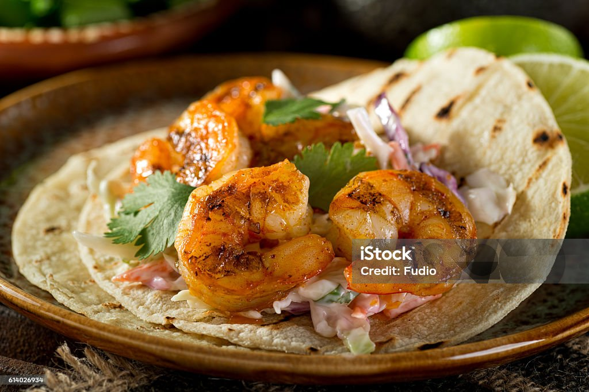

Shrimp Tacos

Delicious shrimp tacos made with corn tortillas, perfectly seasoned shrimp, aioli sauce, cabbage, lime, and Tabasco!
I like to use 4-5 jumbo shrimp per mini taco.
Ingredients
- 1 lb large shrimp - (thawed and peeled)
- 6-8 tortillas
- 2 limes
- 1 tablespoon olive oil
- 1/2 teaspoon pepper
- 1/2 teaspoon garlic powder
- 1/2 teaspoon chili powder
- 1/2 teaspoon onion powder
- Toppings (optional, to taste): aioli sauce, cabbage, tobasco
Steps
- Heat olive oil in skillet over medium-high heat.
- Meanwhile, in a mixing bowl, add the shrimp, pepper, garlic powder, onion powder, chili powder and mix until shrimp are coated evenly with spices.
- Add the seasoned shrimp to skillet.
- Cook over medium-high heat until the shrimp are pink, for about 5-6 minutes flippping shrimp throughout.
- Remove shrimp from skillet and assemble and eat tacos immediately!